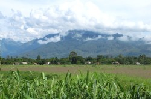
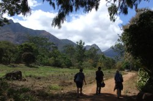
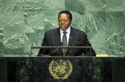

credit: God is all over (cc)
credit: fiverlocker (cc)
credit: United Nations Photo (cc)
Malawi has gone a long way to becoming an independent country and still has a few problems to fix.

President Bingu wa Mutharika improved the economy of Malawi during this first term as president but has had trouble to stop anti-corruption because his party is a minority in legislature. Malawi also faces trouble with HIV/AIDS and population growth. ("Background Note: Malawi")